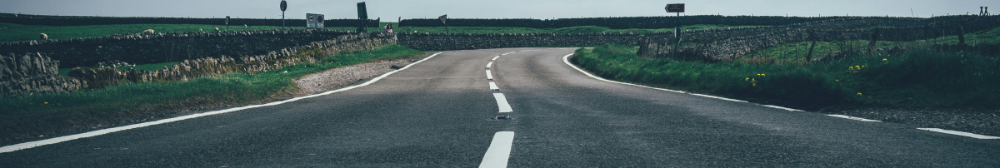

> 인재채용 > 인재상
인재상
Desired talent
인재상
더 나은 세상을 위한 도전에 함께할 여러분을 기다립니다.

삼성은 열린 마음과 긍정적 사고 문제 해결 능력을 갖춘 인재들을 선호하며, 끊임없는 도전과 혁신을 통해 함께 성장하고 발전할 수 있는 인재들을 존중합니다.
- 열린마음
- 이는 비뚤어진 것은 바로 고치도록 당당히 말하는 용기 있는 사람, 더불어 사는 삶을 실천할 수 있는 따뜻한 사람, 집단과 개인 이기주의를 버리고 서로를 격려하며 이끌어 주는 진정한 동료애를 발휘할 줄 아는 사람
- 열린머리
- 열린 사람은 다양한 관점에서 바라볼 수 있는 폭넓은 지식과 유연한 사고방식 으로 자신의 전문 분야뿐 아니라 다른 분야에 대해서도 이해하려고 노력하는 열린 사고를 갖고 있는 사람입니다.
- 열린행동
- 열린 사람은 무한 경쟁의 열린 시대에 살아남을 수 있는 기본기와 능력을 갖추고 국제화된 사고와 에티켓을 갖춘 행동을 통해 세계를 무대로 인류 사회에 공헌하는 것을 목표로 합니다.